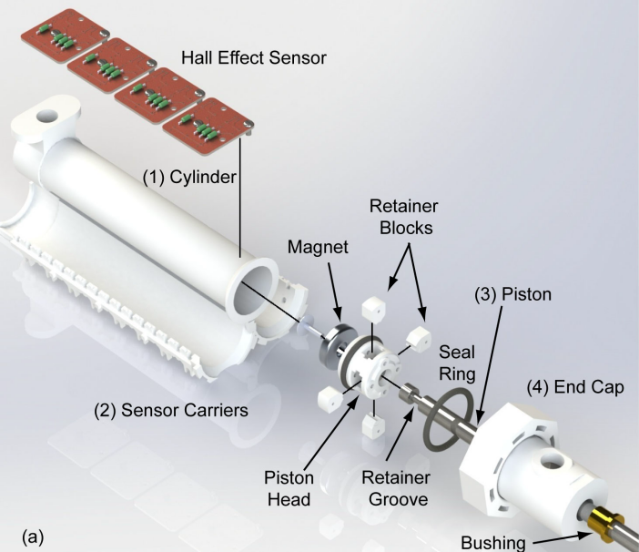

A 3D Printed Linear Pneumatic Actuator for Position, Force and Impedance control
Jeremy Erause et al., Actuators 2018
- Progress %, link
- 侧重于器件设计，简易PI算法控制要解决气动驱动器的三个问题：
- 线性
- 长行程
- 在相对较高的压力下运行，好处： 1）更强的出力 2）更快的响应速度
- 解决方案要点：
- 高应力部分采用金属零件
- 内壁表面后处理减小摩擦力
- 活塞设计提高气密性和强度
- 位置和力控的传感器选择
- 部件解决方案：

- 3D打印的缸体（cylinder），解决内壁的表面光洁度问题
- 传感器紧固件（霍尔传感器）
- 活塞：304不锈钢光轴+3D打印活塞头，活塞头配置永磁体
- 缸盖：
- 其它关注点：
- 位置检测：Honeywell ss49e线性霍尔传感器，15个传感器组成阵列，每个响应范围12.7mm，重叠6.35mm。
- 力检测：Eyourlife pressure transducer，通过
估算， 为supply port截面积 - 电磁阀：
- 前期测试采用ARO P251SS-012-D（60刀以上），30Hz PWM控制，在40psi以上的气压下不足以精确控制位置
- Enfield LS-V15s proportional flow valve（400刀） + D1 PFV驱动器，32kHz PWM调制信号
- 控制方法：PI比例积分控制
- Position control：（测试条件为25psig）
- Force control：
- Impedance control
- 相关文献
- 测量距离的方法
- 接触式：采用linear resistive transducer变阻器，缺点是易被污染和磨损（contamination, wear and tear）
- 非接触式：
- 检测永磁体磁性，耐久度好但是贵，易受干扰
- placing excitation coils along the length of the cylinder
- 测力的方法
直接法获取输出轴上的力，间接法估计传到至输出轴之前的力（因传输又衰减所以可能偏大）
Note that the direct measurement estimates the forces at the output shaft, while the indirect method is only able to estimate the force just before the output shaft. The forces measured at the output shaft may be smaller than the forces before the output shaft due to inefficiencies (e.g., force of friction)
- 直接对力进行测量
- 间接法：通过测量两个腔室中的气压对力进行估计
- A force-controlled pneumatic actuator
- Design of embedded pressure and position sensors for soft actuators
- A miniature 3D printed on-off linear pneumatic actuator with application for legged robots
- variable position and force control of a pneumatically actuated knee joint.
- 测量距离的方法
Impedance Control of a Pneumatic Actuator for Contact Tasks
Yong Zhu, et al., ICRA 2005
- Progress %, link
- 侧重于控制算法，用成熟产品搭建测试平台，成本高
- 测试环境：
- 气缸：Festo SLT-20-150-A-CC-B，行程150mm，内径20mm，导杆直径8mm
- 线性变阻器Midori LP-150F，行程150mm，用于测量位移。
- 速度的测量由对位移的一次差分获得
- 加速度的测量由对速度的一次差分获得
- 电磁阀：两个four-way proportional valves（Festo MPYE-5-1/8-LF-010-B），当作three-way用
- 两个气压传感器Omega PX202-200GV，装在两个腔室。
- Load cell传感器Transducer Techniques MLP-500仅用来测气缸接触侧壁时候的冲击力不用于控制。